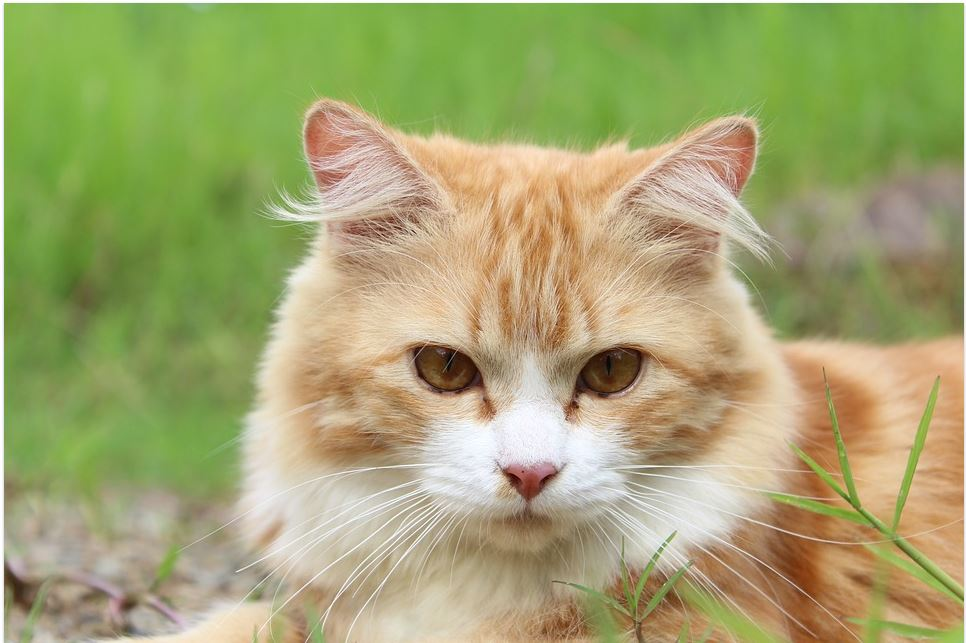

Leo - Kitten
Name: Leo

Age: 11 months
Species: Maine Coon
Size: Medium
Colour: Ginger / tabby
Personality: Friendly and adventurous
Description: Leo is a very outgoing cat who enjoys to hunt and explore. He will happily come home to a loving family for cuddles and attention.